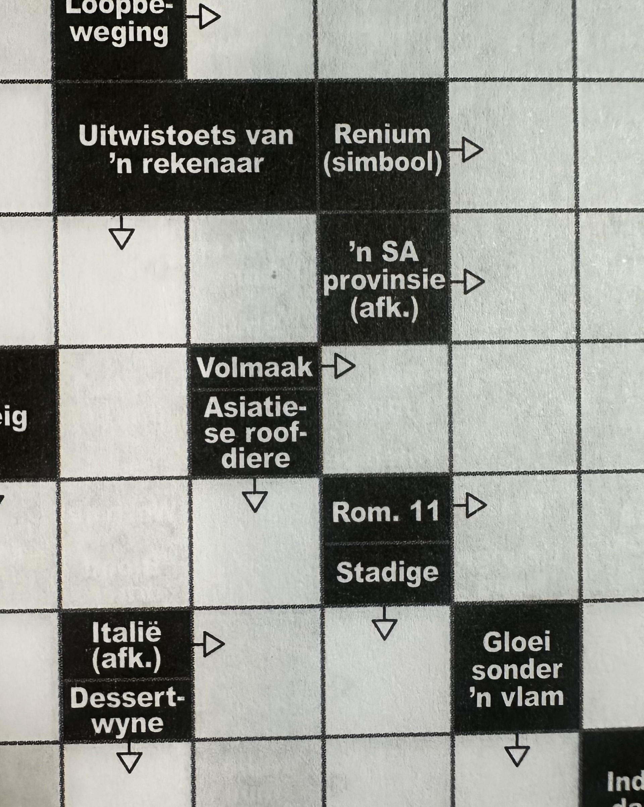
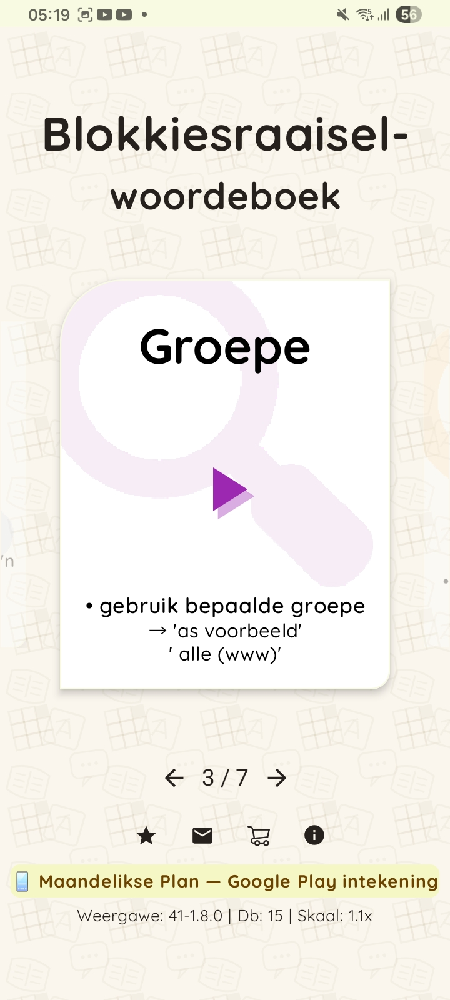
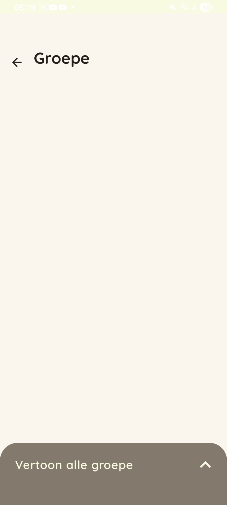
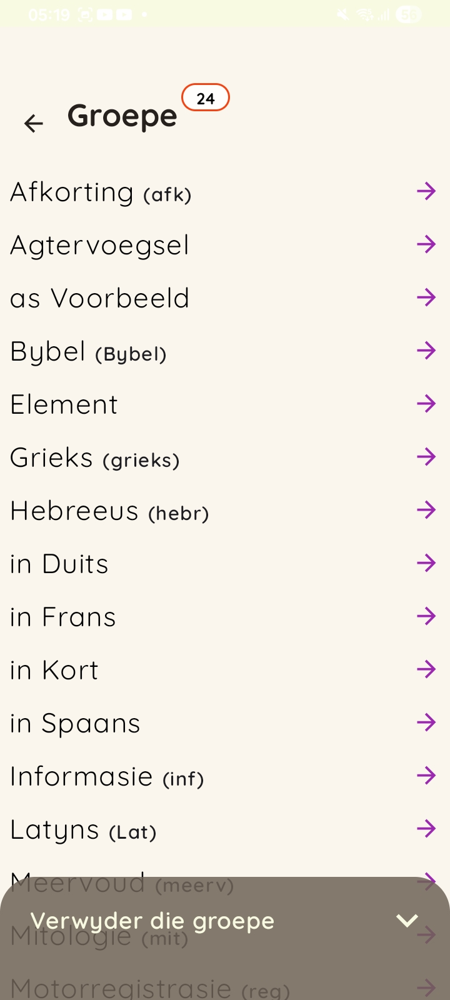
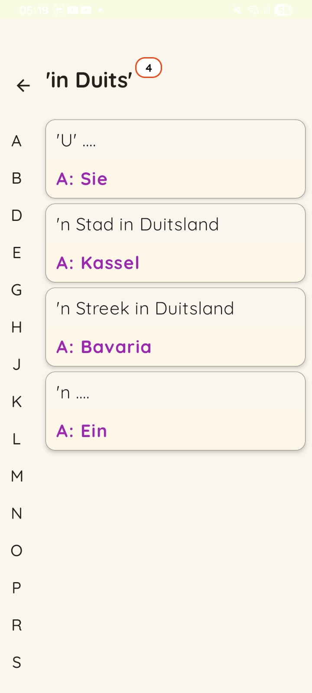
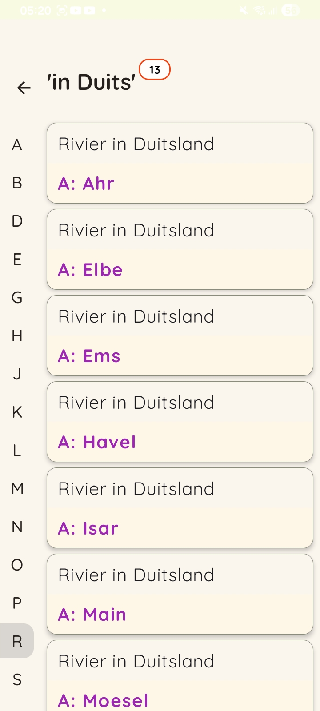
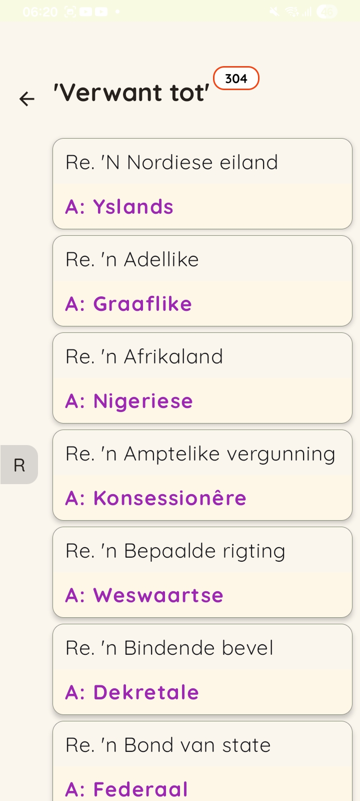

Verken woorde georganiseer volgens vooraf bepaalde kategorieë — perfek wanneer jy weet watter tipe woord jy soek. Kies 'n groep, sien die woorde en die antwoorde wat daarmee verband hou — alles gebeur sonder die internet toegang.
Explore words organized by pre-defined categories — perfect when you know what type of word you're looking for. Pick a group, see the words and related answers — all offline.
Voorbeelde van groepe
Meer as 20 groepe om te verken, onder andere:
Afkorting (afk) — afkortings en hul antwoorde
Bybel (Bybel) — Bybelverwante woorde
Latyns (Lat) — Latynse woorde en frases
Simbool (simbool) — simbole en hul antwoorde
Verwant tot — woorde wat met mekaar verband hou

Example groups
More than 20 groups to explore, including:
Abbreviation (afk) — abbreviations and their answers
Bible (Bybel) — Bible-related words
Latin (Lat) — Latin words and phrases
Symbol (simbool) — symbols and their answers
Related to — words connected to each other
Groep funksie
Screenshots
Stappe om die antwoord te vind d.m.v. die groepe.
Browse screenshots of the Group search feature in the app.
Luister na die oudio en volg dan die stappe verder.
Browse screenshots of the Group search feature in the app.
SkermmodusScreen mode






1 / 6
Groep funksie
Choose a group
Volg die stappe om die antwoord te vind d.m.v. die groepe.
Select Groups on the home screen. Browse more than 20 categories — from Abbreviations and Bible to Latin, Symbols, and more.
Volg die verskillende skermgrepe.
Edit this text in groepe.html (carousel-copy section).
Groep funksie
Group words
Maak beskikbaar die verskillende groepe deur op die pyltjie regs onder te klik.
Edit this text in groepe.html (carousel-copy section).
Lys vooraf bepaalde groepe
Answers per group
Hierdie is 'n lys van groepe wat in blokkiesraaisels voorkom'.
Edit this text in groepe.html (carousel-copy section).
Groep - 'in Duits'
Screenshot 4
Net ter inligting die 4-kolletjies verteenwoordig 'in Duits'.
Edit this text in groepe.html (carousel-copy section).
Die kolom links help jou met die leidraad se eerste letter.
Edit this text in groepe.html (carousel-copy section).
Groep - 'in Duits'
Screenshot 5
Die leidraad se eerste letter is 'R'.
Edit this text in groepe.html (carousel-copy section).
Groep - 'Verwant tot'
Screenshot 6
Die leidraad se eerste letter is 'R'.
Edit this text in groepe.html (carousel-copy section).
Entoesiastiese gebruiker, die groepe funksie is vir jou!
Try Group search yourself
Laai af 'Blokraai WB' en verken die groepe — geen internet toegang benodig..
Download Blokraai Woordeboek and explore the groups — fully offline.
'Letters, blokkies, brein op FIRE - dis my ding!'
Edit this text in groepe.html (carousel-copy section).